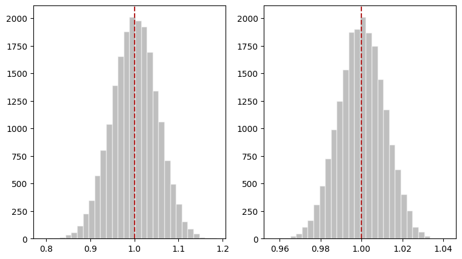

from scipy.special import comb
import os
import pandas as pd
from statsmodels.stats.weightstats import ttest_ind
import numpy as np
from scipy.stats import mannwhitneyu
from scipy.stats import ks_2samp
import matplotlib.pyplot as plt
from scipy.stats import expon
import os
if 'COLAB_GPU' in os.environ:
from google.colab import drive
drive.mount("/content/drive/")
path = "/content/drive/MyDrive/Estudios/ding/data"
df = pd.read_csv(os.path.join(path, "Penn46_ascii.txt"), delimiter=" ")
else:
df = pd.read_csv("data/Penn46_ascii.txt", delimiter = " ")Estratificación y Post-estratificación
Causal Inference
Estratificación y Post-estratificación en Experimentos Completamente Aleatorizados
Estratificación y Post-estratificación en Experimentos Aleatorizados
Estratificación
En un experimento completamente aleatorizado, donde las unidades tienen una covariable discreta con \(k\) estratos, es posible que la asignación de tratamiento y control genere un desbalance de dicha covariable, causando que sea difícil de interpretar los resultados del experimento ya que estos podrían ser atribuidos por el desbalance de la covariable o por el tratamiento.
Para evitar esto, es posible utilizar un experimento aleatorizado estratificado (SRE).
Definición: Experimento aleatorizado estratificado
Considera un CRE con \(n\) unidades. Adicionalmente, considera una covariable discreta \(X_i \in \{ 1,...,K\}\) donde podemos definir el número y proporción de unidades de cada estrato como \(n_{[k]} = \#\{i:X_i=k\}\) y \(\pi_{[k]}=n_{[k]}/n\), respectivamente.
El número de unidades del estrato \(k\) asignadas al tratamiento (\(n_{[k]1}\)) y al control (\(n_{[k]0}\)) es:
\[n_{[k]1}=\#\{i:X_i=k, Z_i = 1\}\] \[n_{[k]0}=\#\{i:X_i=k, Z_i = 0\}\]
Consideremos estas unidades como fijas. Un SRE es un experimento en el que se conducen \(K\) CRE independientes dentro de los K estratos de la covariable discreta \(X\).
El número total de aleatorizaciones posibles es:
\[\prod_{i=1}^k\binom{n_{[k]}}{n_{[k]1}} < \binom{n}{n_1}\]
Definición: Propensity score
El propensity score es la proporción de unidades de cada estrato que reciben el tratamiento:
\[e_{[k]}=\frac{n_{[k]1}}{n_{[k]}}\]
- \(e_{[k]}\) es fijo en un SRE pero aleatorio en un CRE.
Definición: Efectos causales promedio del estrato y efecto causal promedio global
Recordemos que el efecto causal para cada unidad \(i\) es \(\tau_i = Y_i(1) - Y_i(0)\). Para cada estrato \(k\), podemos definir el efecto causal promedio:
\[\tau_{[k]} = n_{[k]}^{-1}\sum_{X_i=k}\tau_i\]
El efecto causal promedio global es el promedio ponderado de los efectos causales promedios de cada estrato, donde el ponderador es la proporción de unidades del estrato.
\[\tau=\sum_{k=1}^K\pi_{[k]}\tau_{[k]}\]
Prueba de aleatorización de Fisher en Experimentos Estratificados Aleatorizados
Recordemos que la hipótesis nula de Fisher es que los efectos potenciales de la unidad \(i\) son iguales:
\[H_{0F}:Y_i(1) =Y_i(0) \text{ para todas las unidades i = 1,...,n}\]
En el caso estratificado, podemos usar cualquier estadístico \(T=T(Z,Y,X)\) donde \(Z\) es el vector de tratamiento, \(Y\) es el vector de resultados observados y \(X\) es la matriz de covariadas. Bajo un SRE y \(H_{0F}\) el estadístico T tiene una distribución conocida porque la distribución de \(Z\) es conocida. En este caso, debemos obtener la distribución del vector de tratamiento a través de permutaciones en cada estrato, es decir, obtener la distribución condicional de \(Z | X_i = k\). A esta prueba se le conoce como prueba de aleatorización condicional o prueba de permutación condicional.
Estimador estratificado
Cuando estratificamos, es posible obtener el estimador estratificado del efecto causal promedio \(\hat\tau_S\):
\[\hat\tau_S = \sum_{k=1}^K\pi_{[k]}\hat\tau_{[k]}\]
Donde \(\hat\tau_{[k]}\) es el estimador del efecto causal promedio del estrato \(k\):
\[\hat\tau_{[k]} = n_{[k]1}^{-1}\sum_{i=1}^{n}I(Z_i=1, X_i=k)Y_i - n_{[k]0}^{-1}\sum_{i=1}^{n}I(Z_i=0, X_i=k)Y_i\]
Estimador estratificado studentizado
La versión studentizada del estimador del efecto causal promedio estratificado está dado por:
\[t_S=\frac{\hat\tau_S}{\sqrt{\hat V_S}}\]
Donde \(\hat V_S\) es el estimador estratificado de la varianza, asumiendo que no hay correlación entre los estratos:
\[\hat V_S= \sum_{k=1}^K\pi_{[k]}^2\bigg(\frac{\hat S_{[k]}^2(1)}{n_{[k]1}} + \frac{\hat S_{[k]}^2(0)}{n_{[k]0}}\bigg)\]
y en donde \(S_{[k]}^2(1) \text{ y }S_{[k]}^2(0)\) son las varianzas muestrales de los resultados bajo tratamiento y control, respectivamente.
Prueba de Wilcoxon para suma de rangos
Para la prueba de Wilcoxon es posible calcular un valor estratificado \(W_S\) mediante la suma ponderada de los estadísticos en cada estrato \(W_{[k]}\):
\[W_S = \sum_{k=1}^Kc_{[k]}W_{[k]}\]
Aquí no se discute el cálculo del ponderador, sin embargo, pueden usarse dos:
\(c_{[k]}=\frac{1}{n_{[k]1}n_{[k]0}}\)
\(c_{[k]}=\frac{1}{n_{[k]}+1}\)
Prueba de Kolmogorov-Smirnoff
Podemos computar el estadístico estratificado \(D_S\) como la suma ponderada de las diferencias máximas de las distribuciones empíricas de los resultados bajo tratamiento y control en cada estrato \(D_{[k]}\):
\[D_S=\sum_{k=1}^Kc_{[k]}D_{[k]}\]
Donde:
\[c_{[k]}= \sqrt{n_{[k]1}n_{[k]0} / n_{[k]}}\]
# Penn data
z = df["treatment"]
y = np.log(df["duration"])
block = df["quarter"]
# Creamos una tabla de contingencia
pd.crosstab(z, block)| quarter | 0 | 1 | 2 | 3 | 4 | 5 |
|---|---|---|---|---|---|---|
| treatment | ||||||
| 0 | 234 | 41 | 687 | 794 | 738 | 860 |
| 1 | 87 | 48 | 757 | 866 | 811 | 461 |
def stat_sre(z, y, x):
xlevels = np.unique(x)
K = len(xlevels)
Pi_K = np.zeros(K)
Tau_K = np.zeros(K)
W_K = np.zeros(K)
for k in range(K):
x_k = xlevels[k]
z_k = z[x==x_k]
y_k = y[x==x_k]
Pi_K[k] = len(z_k)/len(z)
Tau_K[k] = np.mean(y_k[z_k==1]) - np.mean(y_k[z_k==0])
W_K[k] = mannwhitneyu(y_k[z_k==1], y_k[z_k==0]).statistic
return [np.sum(Pi_K * Tau_K), np.sum(W_K / Pi_K)]stats_obs = stat_sre(z, y, block)
stats_obs[np.float64(-0.0899064590011073), np.float64(4687961.229438581)]def zRandomSRE(z, x):
xlevels = np.unique(x)
K = len(xlevels)
zrandom = z.copy()
for k in range(K):
x_k = xlevels[k]
zrandom[x==x_k] = np.random.permutation(z[x==x_k])
return zrandomMC = 1000
statSREMC = np.zeros((MC, 2))
print(statSREMC.shape)
for mc in range(MC):
zrandom = zRandomSRE(z, block)
statSREMC[mc, ] = stat_sre(zrandom, y, block)(1000, 2)print(np.mean(statSREMC[:,0] <= stats_obs[0]))
print(np.mean(statSREMC[:,1] <= stats_obs[1]))0.001
0.0Inferencia Neymaniana
En un SRE consideramos k CRE independientes. Basado en esto, podemos extender los resultados de Neyman a los SRE. En cada estrato \(k\), el estimador de diferencia de medias \(\hat \tau_{[k]}\) es insesgado para \(\tau_{[k]}\) con varianza:
\[var(\hat\tau_{[k]})= \frac{S^2_{[k]}(1)}{n_{[k]1}} + \frac{S^2_{[k]}(0)}{n_{[k]0}} - \frac{S^2_{[k]}(\tau)}{n_{[k]}}\]
Donde \(S^2_{[k]}(1)\), \(S^2_{[k]}(0)\) y \(S^2_{[k]}(\tau)\) son las varianzas dentro del estrato k de los resultados potenciales de tratamiento y control, así como de los efectos causales individuales, respectivamente. Por lo tanto, el estimador de diferencia de medias \(\hat \tau\) es el promedio ponderado de los estimadores de cada estrato:
\[\hat \tau = \sum_{k=1}^{K} \pi_{[k]} \hat \tau_{[k]}\]
Y la varianza de dicho estimador es (recordando que los CRE son independientes):
\[var(\hat \tau_{[k]}) = \sum_{k=1}^{K} \pi_{[k]}^2 var(\hat \tau_{[k]})\]
Si \(n_{[k]1} \geq 2\) y \(n_{[k]0} \geq 2\) podemos obtener las varianzas muestrales \(\hat S^2_{[k]}(1)\) y \(\hat S^2_{[k]}(0)\) y construir el estimador conservador \(\hat V_S\):
\[\hat V_S = \sum_{k=1}^K\pi_{[k]}^2\bigg(\frac{\hat S^2_{[k]}(1)}{n_{[k]1}} + \frac{\hat S^2_{[k]}(0)}{n_{[k]0}} \bigg)\]
Con los resultados anteriores podemos construir intervalos de confianza para \(\hat \tau_S\) de tipo Wald \(1-\alpha\) para \(\tau\):
\[\hat \tau \pm z_{1-\alpha / 2} \sqrt{\hat V_S}\]
# En este ejemplo ilustraremos la inferencia de Nayman cuando tenemos
# pocos estratos pero grandes y cuando tenemos muchos estratos pero pequeños
def neyman_SRE(z,y,x):
"""
Función para computar los estimadores puntuales y varianzas de Neyman en un SRE
"""
xlevels = np.unique(x)
K = len(xlevels)
PiK = np.zeros(K)
TauK = np.zeros(K)
VarK = np.zeros(K)
for k in range(K):
xk = xlevels[k] # Estrato k
zk = z[x==xk] # Vector de tratamiento en el estrato k
yk = y[x==xk] # Vector de resultados observados en el estrato k
PiK[k] = len(zk)/len(z)
TauK[k] = np.mean(yk[zk==1]) - np.mean(yk[zk==0])
VarK[k] = np.var(yk[zk==1], ddof=1) / np.sum(zk) + np.var(yk[zk==0], ddof=1) / np.sum( 1- zk)
return [np.sum(PiK*TauK), np.sum((PiK**2)*VarK)]
K = 5
n = 80
n1 = 50
n0 = 30
x = np.repeat(np.arange(0, K), n)
y0 = expon.rvs(scale = 1/(x+1), size=n*K)
y1 = y0 + 1
zb = np.concatenate([np.ones(n1), np.zeros(n0)])
MC = int(20000)
Tauhat = np.zeros(MC)
Varhat = np.zeros(MC)
for mc in range(MC):
z = np.concatenate([np.random.permutation(zb) for i in range(K)])
y = z*y1 + (1-z)*y0
est = neyman_SRE(z,y,x)
Tauhat[mc] = est[0]
Varhat[mc] = est[1]
fig, ax = plt.subplots(ncols=2, figsize =(9,5))
ax[0].hist(Tauhat, bins=30, color = "grey", edgecolor='white', alpha = 0.5)
ax[0].axvline(x = np.mean(Tauhat), color = "firebrick", linestyle='--')
print(np.var(Tauhat, ddof=1))
print(np.mean(Varhat))
K = 50
n = 8
n1 = 5
n0 = 3
x = np.repeat(np.arange(0, K), n)
y0 = expon.rvs(scale = 1/(x+1), size=n*K)
y1 = y0 + 1
zb = np.concatenate([np.ones(n1), np.zeros(n0)])
MC = int(20000)
Tauhat = np.zeros(MC)
Varhat = np.zeros(MC)
for mc in range(MC):
z = np.concatenate([np.random.permutation(zb) for i in range(K)])
y = z*y1 + (1-z)*y0
est = neyman_SRE(z,y,x)
Tauhat[mc] = est[0]
Varhat[mc] = est[1]
ax[1].hist(Tauhat, bins=30, color = "grey", edgecolor='white', alpha = 0.5)
ax[1].axvline(x = np.mean(Tauhat), color = "firebrick", linestyle='--')
print(np.var(Tauhat, ddof=1))
print(np.mean(Varhat))0.002649471619353108
0.0026387056721032705
0.0001257350167121581
0.00012686543897443353
Post-estratificación en un CRE
En un SRE, usamos la covariable \(X\) en la etapa de diseño. Si ocupáramos \(X\) en la etapa de análisis, entonces el experimento se llamaría post-estratificación. Asintóticamente, los estimadores de ambos mecanismos son pequeños cuando consideramos estratos grandes.
Para entender un experimento con post-estratificación, consideremos que en un CRE con una covariada discreta \(X\), el número de unidades recibiendo el tratamiento y control es aleatorio en cada estrato \(k\) porque la elección de z no depende del número de unidades de cada estrato. Si fijaramos el número de unidades que reciben tratamiento y control en cada estrato, entonces obtenemos un SRE. Pero si condicionáramos en el vector de tamaño \(k\times2\), \(\bold n=\{n_{[k]1},n_{[k]0}\}\), entonces el CRE se convierte en un SRE. Esto es, si ninguno de los componentes de \(\bold n\) es cero, entonces:
\[pr_{CRE}(Z=z|n)=\frac{pr_{CRE}(Z=z,\bold n)}{pr_{CRE}(\bold n)}= \frac{1}{\prod_{i=1}^{k}\binom{n_[k]}{n_{[k]1}}}\]
Es decir, podemos obtener resultados asintóticamente similares a un SRE condicionando posterior al experimento sobre \(\bold n\).
En particular, el FRT se convierte en un FRT condicional y el análisis de Neyman se convierte en post-estratificación, donde el estimador de diferencia de medias es:
\[\hat \tau_{PS}= \sum_{k=1}^{K}\pi_{[k]}\hat \tau_{[k]}\]
el cuál tiene una forma idéntica al estimador de SRE. La varianza de \(\hat \tau_{PS}\) condicionando en \(\bold n\) es idéntica a la varianza de \(\hat \tau_{S}\) bajo el SRE.
df = pd.read_stata("data/Chong-et-al-Final-Data-Set.dta")
#print(pd.crosstab(df["treatment"], df["class_level"]))
cols = ["treatment", "gradesq34", "class_level", "anemic_base_re"]
df = df[cols]
df = df.loc[df["treatment"] != "Soccer Player"]
# Realizamos tablas de contingencia todas las unidades
df["z"] = np.where(df["treatment"]=="Physician",1,0)
df["y"] = df["gradesq34"]
df["x"] = np.where(df["anemic_base_re"]=="Yes",1,0)
print("-"*50)
print("Tabla de contingencia de todas las unidades")
print(pd.crosstab(df["z"], df["class_level"]))
print("-"*50)
print("Tabla de contingencia de unidades con anemia")
print(pd.crosstab(df.loc[df["anemic_base_re"]=="Yes","z"], df["class_level"]))
print("-"*50)
print("Tabla de contingencia de unidades sin anemia")
print(pd.crosstab(df.loc[df["anemic_base_re"]=="No","z"], df["class_level"]))
# Usamos la función neyman_sre para obtener el estimador estratificado
print("-"*50)
est_sre = neyman_SRE(df["z"], df["y"], df["class_level"])
print("Estimador estratificado (diferencia de medias):", np.round(est_sre[0], 3))
print("Desviación estándar (diferencia de medias):", np.round(np.sqrt(est_sre[1]), 3))
print("Estadístico t:", np.round(est_sre[0]/np.sqrt(est_sre[1]),3))
# Ahora usamos post-estratificación
print("-"*50)
df["sps"] = df["class_level"].astype(str) + df["x"].astype(str)
est_sps = neyman_SRE(df["z"], df["y"], df["sps"])
print("Estimador post_estratificado (diferencia de medias):", np.round(est_sps[0], 3))
print("Desviación estándar (diferencia de medias):", np.round(np.sqrt(est_sps[1]), 3))
print("Estadístico t:", np.round(est_sps[0]/np.sqrt(est_sps[1]),3))--------------------------------------------------
Tabla de contingencia de todas las unidades
class_level 1.0 2.0 3.0 4.0 5.0
z
0 15 19 16 12 10
1 17 20 15 11 10
--------------------------------------------------
Tabla de contingencia de unidades con anemia
class_level 1.0 2.0 3.0 4.0 5.0
z
0 9 5 4 5 6
1 9 8 6 6 4
--------------------------------------------------
Tabla de contingencia de unidades sin anemia
class_level 1.0 2.0 3.0 4.0 5.0
z
0 6 14 12 7 4
1 8 12 9 5 6
--------------------------------------------------
Estimador estratificado (diferencia de medias): 0.406
Desviación estándar (diferencia de medias): 0.202
Estadístico t: 2.005
--------------------------------------------------
Estimador post_estratificado (diferencia de medias): 0.463
Desviación estándar (diferencia de medias): 0.19
Estadístico t: 2.434